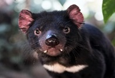

diabo-da-tasmânia (Sarcophilus harrisii)
Marreco de pequeno porte, que vive em lagoas e banhados...

Marreco de pequeno porte, que vive em lagoas e banhados...
As lontras são uma éspecie que originalmente habitavam a o Norte de Buenos Aires. O animal apresenta corpo alongado, fino e flexível, cabeça alongada e chata, pernas curtas, orelhas pequenas e arredondadas. Pode atingir cerca de 1,5 m de comprimento e pesar cerca de 15 kg. A coloração da pelagem é marrom, variando do marrom-claro ao marrom-escuro. A pelagem da lontra é constituída por pelos curtos e se destaca por ser bastante densa."